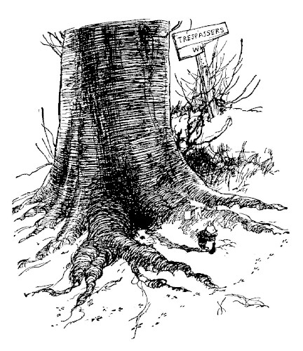
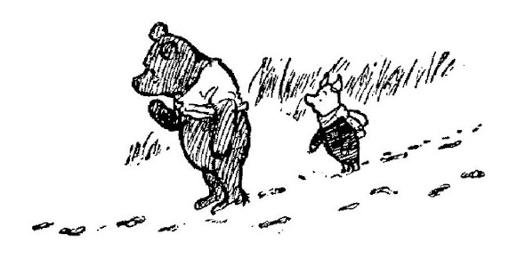
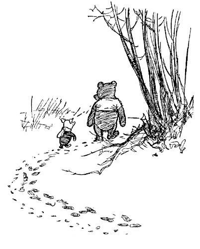
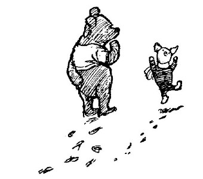
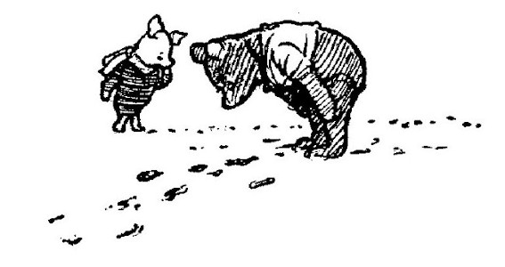
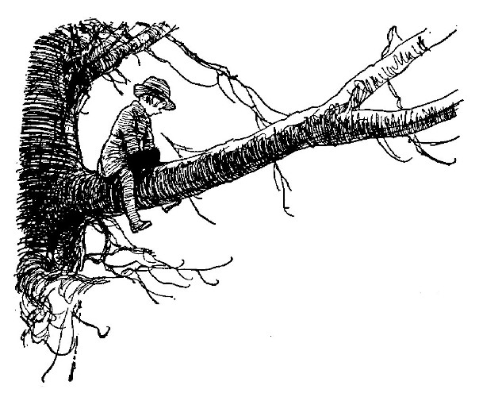
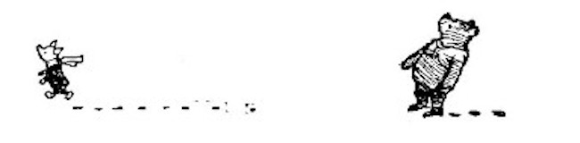

The Piglet lived in a very grand house in the middle of a beech-tree, and the beech-tree was in the middle of the forest, and the Piglet lived in the middle of the house. Next to his house was a piece of broken board which had: "TRESPASSERS W" on it. When Christopher Robin asked the Piglet what it meant, he said it was his grandfather's name, and had been in the family for a long time, Christopher Robin said you couldn't be called Trespassers W, and Piglet said yes, you could, because his grandfather was, and it was short for Trespassers Will, which was short for Trespassers William. And his grandfather had had two names in case he lost one—Trespassers after an uncle, and William after Trespassers.
"I've got two names," said Christopher Robin carelessly.
"Well, there you are, that proves it," said Piglet.
One fine winter's day when Piglet was brushing away the snow in front of his house, he happened to look up, and there was Winnie-the-Pooh. Pooh was walking round and round in a circle, thinking of something else, and when Piglet called to him, he just went on walking.
"Hallo!" said Piglet, "what are you doing?"
"Hunting," said Pooh.
"Hunting what?"
"Tracking something," said Winnie-the-Pooh very mysteriously.
"Tracking what?" said Piglet, coming closer.
"That's just what I ask myself. I ask myself, What?"
"What do you think you'll answer?"
"I shall have to wait until I catch up with it," said Winnie-the-Pooh. "Now, look there." He pointed to the ground in front of him. "What do you see there?"

"Tracks," said Piglet. "Paw-marks." He gave a little squeak of excitement. "Oh, Pooh! Do you think it's a—a—a Woozle?"
"It may be," said Pooh. "Sometimes it is, and sometimes it isn't. You never can tell with paw-marks."
With these few words he went on tracking, and Piglet, after watching him for a minute or two, ran after him. Winnie-the-Pooh had come to a sudden stop, and was bending over the tracks in a puzzled sort of way.
"What's the matter?" asked Piglet.
"It's a very funny thing," said Bear, "but there seem to be two animals now. This—whatever-it-was—has been joined by another—whatever-it-is—and the two of them are now proceeding in company. Would you mind coming with me, Piglet, in case they turn out to be Hostile Animals?"
Piglet scratched his ear in a nice sort of way, and said that he had nothing to do until Friday, and would be delighted to come, in case it really was a Woozle.
"You mean, in case it really is two Woozles," said Winnie-the-Pooh, and Piglet said that anyhow he had nothing to do until Friday. So off they went together.

There was a small spinney of larch trees just here, and it seemed as if the two Woozles, if that is what they were, had been going round this spinney; so round this spinney went Pooh and Piglet after them; Piglet passing the time by telling Pooh what his Grandfather Trespassers W had done to Remove Stiffness after Tracking, and how his Grandfather Trespassers W had suffered in his later years from Shortness of Breath, and other matters of interest, and Pooh wondering what a Grandfather was like, and if perhaps this was Two Grandfathers they were after now, and, if so, whether he would be allowed to take one home and keep it, and what Christopher Robin would say. And still the tracks went on in front of them....
Suddenly Winnie-the-Pooh stopped, and pointed excitedly in front of him. "Look!"
"What?" said Piglet, with a jump. And then, to show that he hadn't been frightened, he jumped up and down once or twice more in an exercising sort of way.

"The tracks!" said Pooh. "A third animal has joined the other two!"
"Pooh!" cried Piglet. "Do you think it is another Woozle?"
"No," said Pooh, "because it makes different marks. It is either Two Woozles and one, as it might be, Wizzle, or Two, as it might be, Wizzles and one, if so it is, Woozle. Let us continue to follow them."
So they went on, feeling just a little anxious now, in case the three animals in front of them were of Hostile Intent. And Piglet wished very much that his Grandfather T. W. were there, instead of elsewhere, and Pooh thought how nice it would be if they met Christopher Robin suddenly but quite accidentally, and only because he liked Christopher Robin so much. And then, all of a sudden, Winnie-the-Pooh stopped again, and licked the tip of his nose in a cooling manner, for he was feeling more hot and anxious than ever in his life before. There were four animals in front of them!
"Do you see, Piglet? Look at their tracks! Three, as it were, Woozles, and one, as it was, Wizzle. Another Woozle has joined them!"
And so it seemed to be. There were the tracks; crossing over each other here, getting muddled up with each other there; but, quite plainly every now and then, the tracks of four sets of paws.

"I think," said Piglet, when he had licked the tip of his nose too, and found that it brought very little comfort, "I think that I have just remembered something. I have just remembered something that I forgot to do yesterday and shan't be able to do to-morrow. So I suppose I really ought to go back and do it now."
"We'll do it this afternoon, and I'll come with you," said Pooh.
"It isn't the sort of thing you can do in the afternoon," said Piglet quickly. "It's a very particular morning thing, that has to be done in the morning, and, if possible, between the hours of——What would you say the time was?"
"About twelve," said Winnie-the-Pooh, looking at the sun.
"Between, as I was saying, the hours of twelve and twelve five. So, really, dear old Pooh, if you'll excuse me——What's that?"
Pooh looked up at the sky, and then, as he heard the whistle again, he looked up into the branches of a big oak-tree, and then he saw a friend of his.

"It's Christopher Robin," he said.
"Ah, then you'll be all right," said Piglet. "You'll be quite safe with him. Good-bye," and he trotted off home as quickly as he could, very glad to be Out of All Danger again.

Christopher Robin came slowly down his tree.
"Silly old Bear," he said, "what were you doing? First you went round the spinney twice by yourself, and then Piglet ran after you and you went round again together, and then you were just going round a fourth time——"
"Wait a moment," said Winnie-the-Pooh, holding up his paw.
He sat down and thought, in the most thoughtful way he could think. Then he fitted his paw into one of the Tracks ... and then he scratched his nose twice, and stood up.
"Yes," said Winnie-the-Pooh.
"I see now," said Winnie-the-Pooh.
"I have been Foolish and Deluded," said he, "and I am a Bear of No Brain at All."
"You're the Best Bear in All the World," said Christopher Robin soothingly.
"Am I?" said Pooh hopefully. And then he brightened up suddenly.
"Anyhow," he said, "it is nearly Luncheon Time."
So he went home for it.